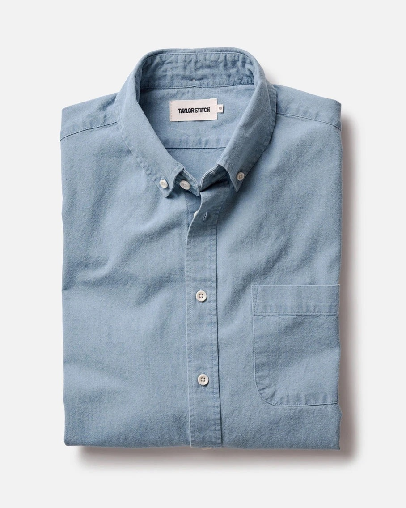

Hover a swatch: its name slides up into the label and the photo switches to that color. Moving off the swatches brings back the selected color. Click a swatch to select it. On Taylor Stitch each swatch links to that color's product page.